สมุนไพรไทย 22 ชนิดเสี่ยงสูญพันธุ์ ประกาศคุ้มครองและควบคุม 7 ชนิด
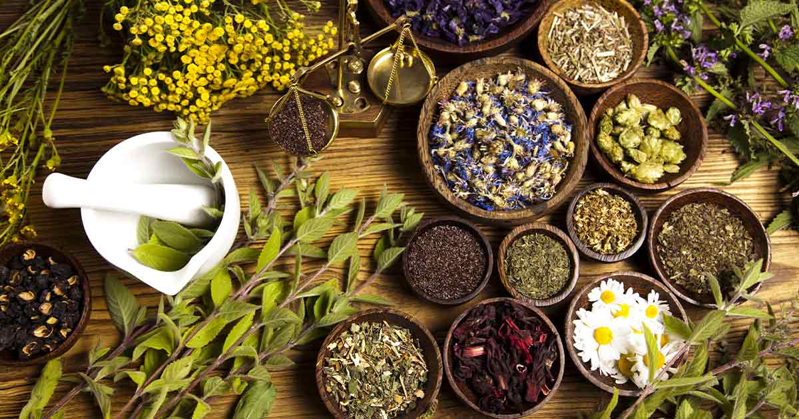
นายนันทศักดิ์ โชติชนะเดชาวงศ์ ผู้อำนวยการกองคุ้มครองภูมิปัญญาการแพทย์แผนไทยและพื้นบ้านไทย กรมพัฒนาการแพทย์แผนไทยและการแพทย์ทางเลือก กระทรวงสาธารณสุข (สธ.) กล่าวว่า ขณะนี้มีสมุนไพรไทย 22 ชนิด ที่เสี่ยงอาจจะสูญพันธุ์ได้ ประกอบด้วย
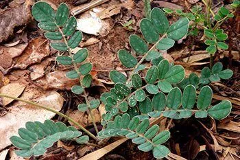
1. ถั่วดินโคก
2. เทพทาโร
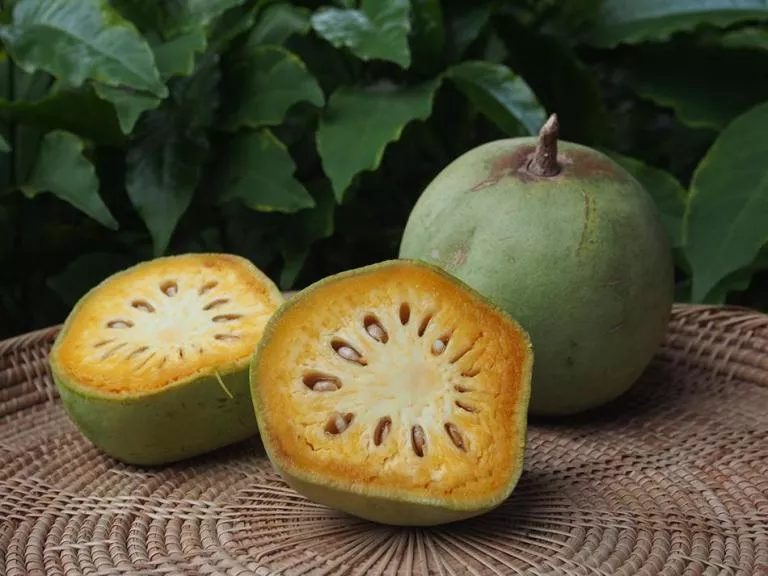
3. มะตูมนิ่ม
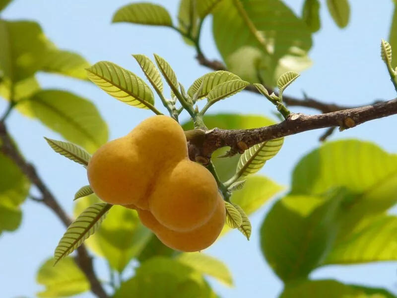
4. มะหาด
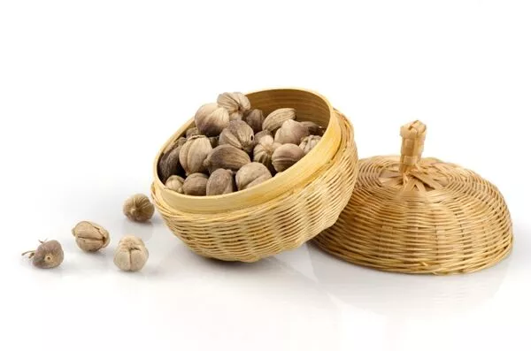
5. เร่ว
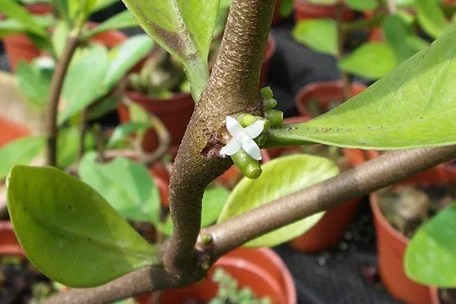
6. หัวร้อยรู
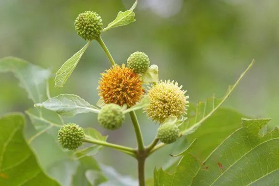
7. กระทุ่มนา
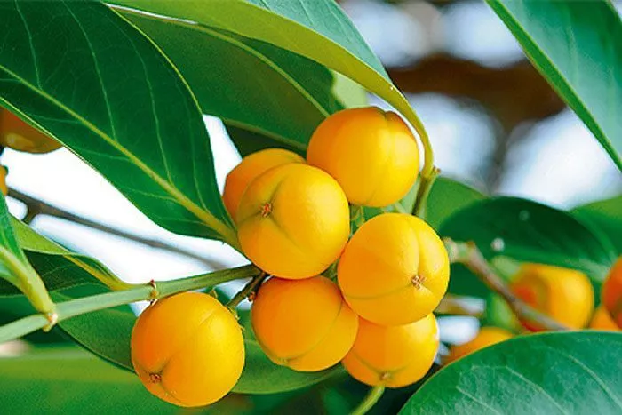
8. ขันทองพยาบาท
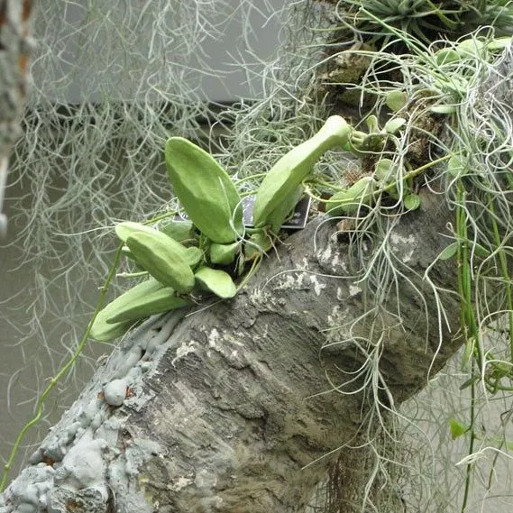
9. จุกโรหินี
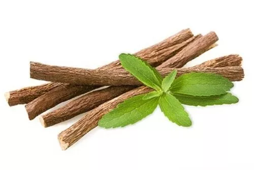
10. ชะเอมไทย
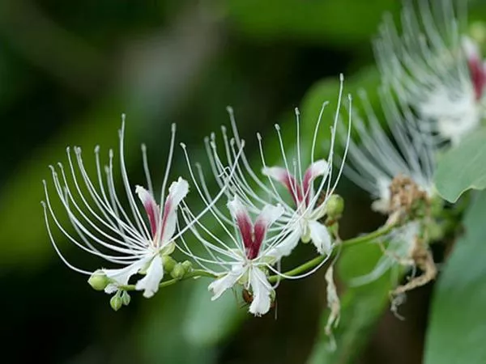
11. ชิงชี่
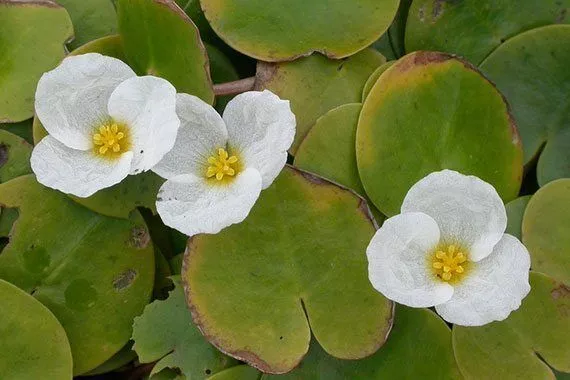
12. ตับเต่า
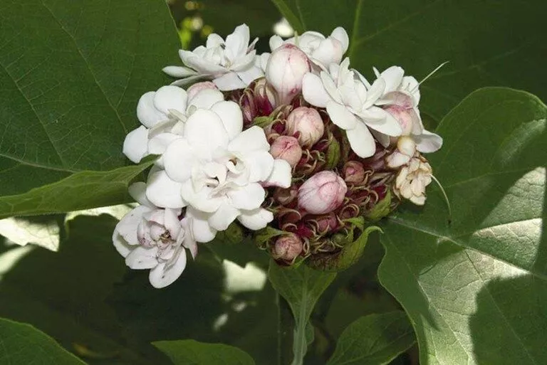
13. นางแย้มป่า
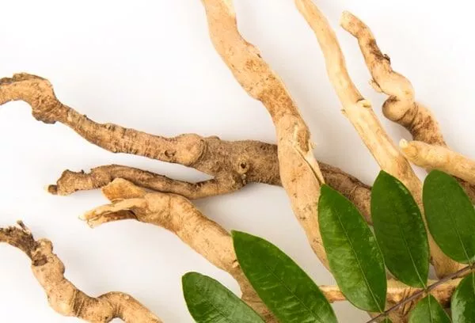
14. ปลาไหลเผือก
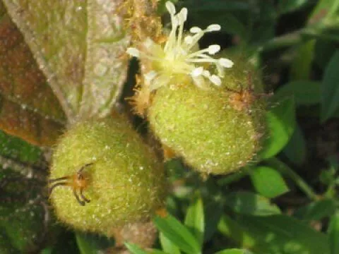
15. พังคี
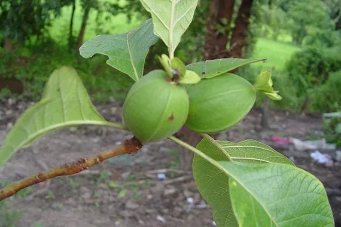
16. มะคังแดง
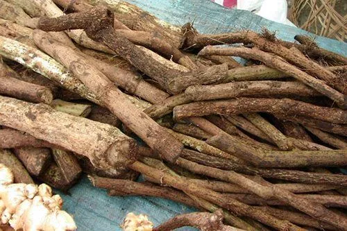
17. สะค้าน
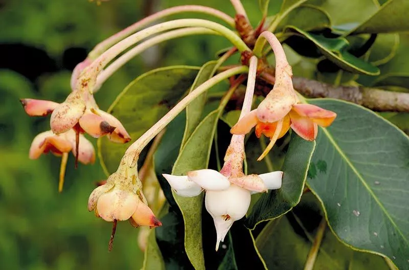
18. สารภีป่า
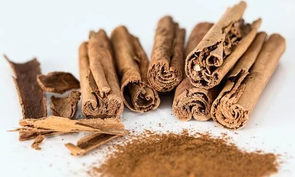
19. อบเชยไทย
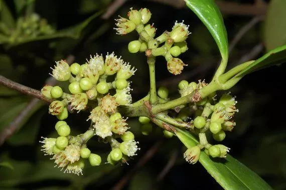
20. เฉียงพร้านางแอ
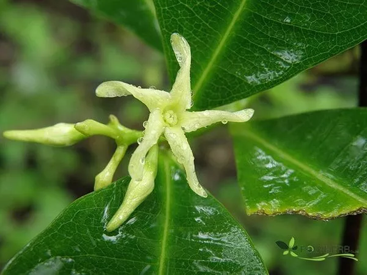
21. เถาเอ็นอ่อน
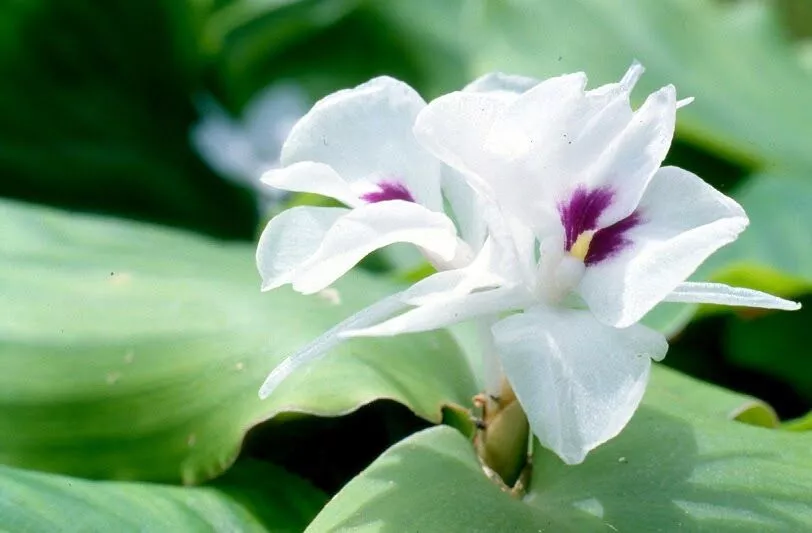
22. เปราะหอม
แต่ละจังหวัดจะมีการจดทะเบียนรายชื่อสมุนไพรที่มีอยู่ในจังหวัดนั้นๆ แบ่งออกเป็น 3 ประเภท คือ
1. สมุนไพรเพื่อการศึกษา
2. สมุนไพรพืชเศรษฐกิจ
3. สมุนไพรเสี่ยงอาจสูญพันธุ์
โดยจะมีคณะผู้เชี่ยวชาญเข้ามาจัดทำข้อมูลของสมุนไพรทั้ง 3 ประเภท จากนั้นได้เลือกออกมาเป็น 22 ชนิด ที่เสี่ยงอาจจะสูญพันธุ์ เนื่องจากเป็นสมุนไพรที่เติบโตช้า นายนันทศักดิ์ กล่าวว่า คณะกรรมการคุ้มครองและส่งเสริม ภูมิปัญญาการแพทย์แผนไทยได้ประชุมหารือกัน โดยเลือกสมุนไพร 6 ชนิดจาก 22 ชนิดขึ้นมา คือ ถั่วดินโคก หรือ พิษนาศน์ เทพทาโร มะตูมนิ่ม มะหาด เร่ว และ หัวร้อยรู
นอกจากนี้ ยังเสนอสมุนไพร “กระวาน” ขึ้นมาเป็นพิเศษ ด้วยอีกชนิดหนึ่ง เพื่อประกาศคุ้มครองและเป็นสมุนไพรที่ต้องควบคุม โดยหากใครมีสมุนไพร 7 ตัวนี้อยู่ในครอบครองไม่ได้ถือว่ามีความผิด เพียงแต่ต้องแจ้งมาทาง สธ. ให้รับทราบว่ามีอยู่เท่าใด
อ้างอิง